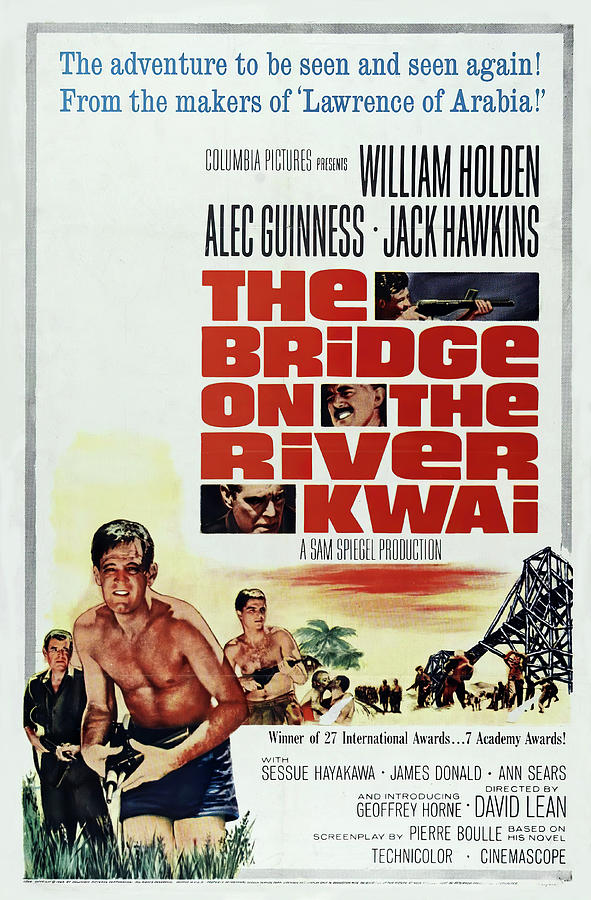
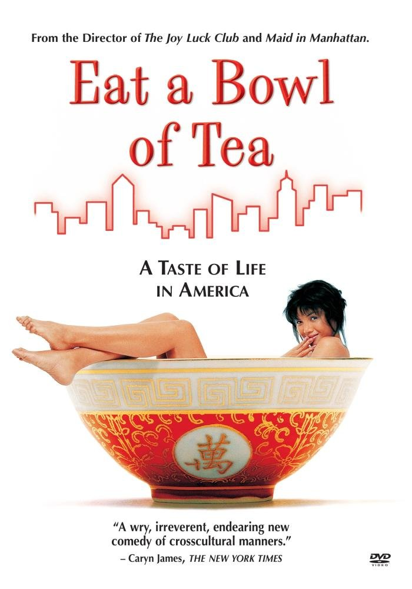

Tropes, Stereotypes, Yellowface, and Typecasting—all have been present since the beginning of Hollywood. The depiction of Asians in Hollywood films is oftentimes overt with harmful clichés and stereotypes, with women depicted as dragon ladies, China dolls, or tiger moms, and the men depicted as emasculated and salacious. Despite this rough beginning of Asian representation within Hollywood, in more recent years, more authentic and innovative portraits of the Asian American experience have been breaking into mainstream media.
The timeline below focuses on Asian American representation in Hollywood, and the slow improvement from clichés and stereotypes to positive roles beyond their race.
1914 - Kintaro Hayakawa (b. 1889) stars in “The Typhoon,” which seals his status as the first Asian sex symbol among women, despite the fictional murder of his lover.
1915 - Hayakawa stars in “The Cheat;” audiences see the first interracial movie kiss between Hayakawa and a white woman, who he later brands with an iron.
1918 - Hayakawa, fed up with his stereotypical roles, leaves the industry to form his own Haworth Pictures Corp, releasing 19 films over the next four years.
1922 - Anna May Wong (b.1905) stars in “The Toll of the Sea” at 17. Wong would become the most notable Asian American actress, though her contributions to the industry were not appreciated until nearly a century after her birth.
1930 - The Hays Code (Will H. Hays) goes into effect, which largely censored what could be shown to audiences, including interracial relationships. The ban against miscegenation remained in California law until 1948.
1931 - Hayakawa returns to Hollywood, starring in his sound debut “Daughter of the Dragon” with Wong.
1937 - Wong auditions for “The Good Earth,” arguably the first positive depiction of Asian women on screen, but loses the role to Luise Rainer, a white woman in yellowface.
1937 - Sabu Dastagir (b. 1924) stars in the titular role of “Elephant Boy” at the age of 13. Known as simply Sabu, the young boy would continue to star in comical roles such as this one.
Key Films
Air Force (1943)
Released in 1943 at the height of the war, the film depicts Japanese people as inherently evil. There is an added scene involving sabotage by Japanese-Americans in Hawaii prior to Pearl Harbor, though the sabotage never happened in reality.
Dragon Seed (1944)
Katharine Hepburn plays a Chinese woman named, Jade, who has her village invaded. Hepburn is shown throughout the movie in yellowface.
Love is a Many-Splendored Thing (1955)
Tells the story of the character Han Suyin, played by Jennifer Jones who is shown in yellowface throughout the course of the film.
The King and I (1956)
A 20th Century Fox musical film starring Yul Brunner (who is described as the “Exotic leading man of American films”) as King Mongkut of Siam. The film is banned in Thailand for its inaccurate portrayal of the royal family.
The Bridge on the River Kwai (1957)

A 1957 prisoner-of-war story that contrasts the lives of American people and Western culture during a war to the lives of Japanese people. The film depicts American culture as civilized and Japanese culture as barbaric.
Flower Drum Song (1961)
The Rodgers and Hammerstein film was made in 1961 and was the first Hollywood film with Asian American actors cast in the roles of the romantic leads.
7 Faces of Dr. Lao (1964)
The Aristocats (1970)
The Disney animated film released in 1970 revolves around a family of aristocratic cats. The film features a Siamese cat, Shun Gon, who is depicted in a stereotypical manner.
Sixteen Candles (1984)
A 1984 coming-of-age comedy film that features an Asian exchange student, Long Duk Dong, played by actor Gedde Watanabe. The film has been called “the worst depiction of an Asian character by an Asian actor.”
Eat a Bowl of Tea (1989)

A romantic story of Chinese-American immigrants living in New York's Chinatown in the late 1940s. Written, directed, and acted by Chinese-American immigrants.
Wedding Banquet = Xi Yan (1993)
A romantic comedy film in both Mandarin and English, directed by Ang Lee
Dragon: The Bruce Lee Story (1998)
A biopic of the martial arts star, Bruce Lee, and his rise to success and fame, starring actor Jason Scott Lee of Hawaiian and Chinese descent.
Crouching Tiger, Hidden Dragon (2000)
A young Chinese warrior steals a sword from a famed swordsman and then escapes into a world of romantic adventure with a mysterious man on the frontier of the nation.
Crazy Rich Asians (2018)
First Hollywood movie with an all-Asian cast in 25 years and has been noted as the biggest romantic comedy in 10 Years. (U.S. Box Office: $172M).
To All The Boys I’ve Loved Before (2018)
A Netflix original teen rom-com that cast an Asian female in its lead role.
Always Be My Maybe (2019)
Another Rom-com with Asian leads.
Heading: Major Milestones for Asian Americans in Hollywood
1958 – Miyoshi Umeki wins best supporting actress for her performance in Sayonara.
[insert embedded video]
1993 – Joy Luck Club film released. Was the first Hollywood film with an all-Asian cast.
2000 - First Asian male (Jackie Chan) and first Asian female (Lucy Liu) to host Saturday Night Live.
2018 – Sandra Oh was nominated at the Emmys for Best Actress & Crazy Rich Asians premieres as the first Hollywood film with an all-Asian cast in 25 years.
2019 – Sandra Oh is the first person of Asian descent to co-host the Golden Globe Awards in its 76-year history.

 Released in 1943 at the height of the war, the film depicts Japanese people as inherently evil. There is an added scene involving sabotage by Japanese-Americans in Hawaii prior to Pearl Harbor, though the sabotage never happened in reality.
Released in 1943 at the height of the war, the film depicts Japanese people as inherently evil. There is an added scene involving sabotage by Japanese-Americans in Hawaii prior to Pearl Harbor, though the sabotage never happened in reality.
 Katharine Hepburn plays a Chinese woman named, Jade, who has her village invaded. Hepburn is shown throughout the movie in yellowface.
Katharine Hepburn plays a Chinese woman named, Jade, who has her village invaded. Hepburn is shown throughout the movie in yellowface.
 Tells the story of the character Han Suyin, played by Jennifer Jones who is shown in yellowface throughout the course of the film.
Tells the story of the character Han Suyin, played by Jennifer Jones who is shown in yellowface throughout the course of the film.
 A 20th Century Fox musical film starring Yul Brunner (who is described as the “Exotic leading man of American films”) as King Mongkut of Siam. The film is banned in Thailand for its inaccurate portrayal of the royal family.
A 20th Century Fox musical film starring Yul Brunner (who is described as the “Exotic leading man of American films”) as King Mongkut of Siam. The film is banned in Thailand for its inaccurate portrayal of the royal family.
 A 1984 coming-of-age comedy film that features an Asian exchange student, Long Duk Dong, played by actor Gedde Watanabe. The film has been called “the worst depiction of an Asian character by an Asian actor.”
A 1984 coming-of-age comedy film that features an Asian exchange student, Long Duk Dong, played by actor Gedde Watanabe. The film has been called “the worst depiction of an Asian character by an Asian actor.”
 A romantic comedy film in both Mandarin and English, directed by Ang Lee
A romantic comedy film in both Mandarin and English, directed by Ang Lee
 A biopic of the martial arts star, Bruce Lee, and his rise to success and fame, starring actor Jason Scott Lee of Hawaiian and Chinese descent.
A biopic of the martial arts star, Bruce Lee, and his rise to success and fame, starring actor Jason Scott Lee of Hawaiian and Chinese descent.
 A young Chinese warrior steals a sword from a famed swordsman and then escapes into a world of romantic adventure with a mysterious man on the frontier of the nation.
A young Chinese warrior steals a sword from a famed swordsman and then escapes into a world of romantic adventure with a mysterious man on the frontier of the nation.
 First Hollywood movie with an all-Asian cast in 25 years and has been noted as the biggest romantic comedy in 10 Years. (U.S. Box Office: $172M).
First Hollywood movie with an all-Asian cast in 25 years and has been noted as the biggest romantic comedy in 10 Years. (U.S. Box Office: $172M).
 A Netflix original teen rom-com that cast an Asian female in its lead role.
A Netflix original teen rom-com that cast an Asian female in its lead role.
 Another Rom-com with Asian leads.
Another Rom-com with Asian leads.